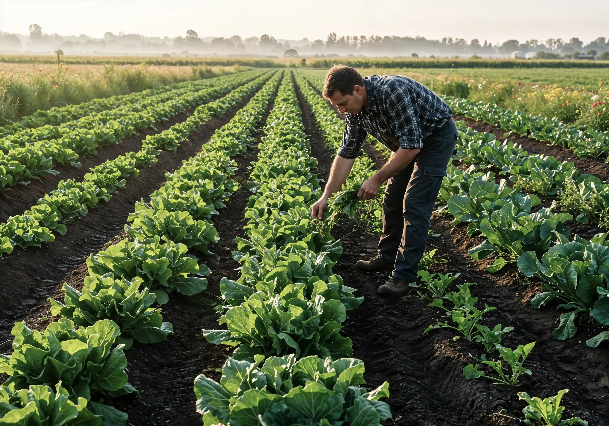

Purn Organic is renowned for its in-house state of the art sustainable agriculture development
techniques coupled with innovative thinking with respect to natural resources utilization for
higher profitability.
We seek to maximize natural agricultural production whilst minimizing the dependency on middle
man. The released revenue for farmers can then be utilized in a range of diverse and profitable
downstream activities bringing enormous benefits to the Country.
As a leading provider of cloud-based procurement and strategic sourcing solutions, we thought it
would be useful to show how Purn Organic could rapidly address key challenges of farmers and
help to meet the objectives.

Our vision is to transform traditional farming practices into a modern and sustainable model that benefits both farmers and consumers. We aim to create a community-based platform that promotes transparency, accountability, and sustainability in the agriculture sector.
Our mission is to provide unique and sustainable community farming solutions that promote healthy eating habits, reduce the carbon footprint of food wastage and transportation, and empower farming communities to become self-sufficient and economically independent. We also aim to create employment opportunities for farming communities through skill development and training programs.
Utilizing Blockchain and Artificial Intelligence to bridge the gap between farmers and consumers.
Our Family Kitchen Subscription offers complete transparency through fully automated supply chains.
Integration of advanced agricultural practices, training, and services on a single centralized system.
Ensuring individual revenue increases and every farm produce yield reaches its maximum potential.
Through Rural Agri Support Centers, Call Centers, and small-scale Agri industries, we are creating new employment opportunities at the village level.
Crop Analysis
Secured Supply
Chemical Free
Discover what makes us different and why we're the best choice for your organic needs.

Straight from sustainable local farms to your doorstep.

Transparent processes you can trust, every single time.

Empowering rural growers and supporting local economy.

A handpicked selection of 500+ premium organic goods.

Triple-certified quality checks for maximum nutrient density.

Preserving heritage grains with modern safety standards.